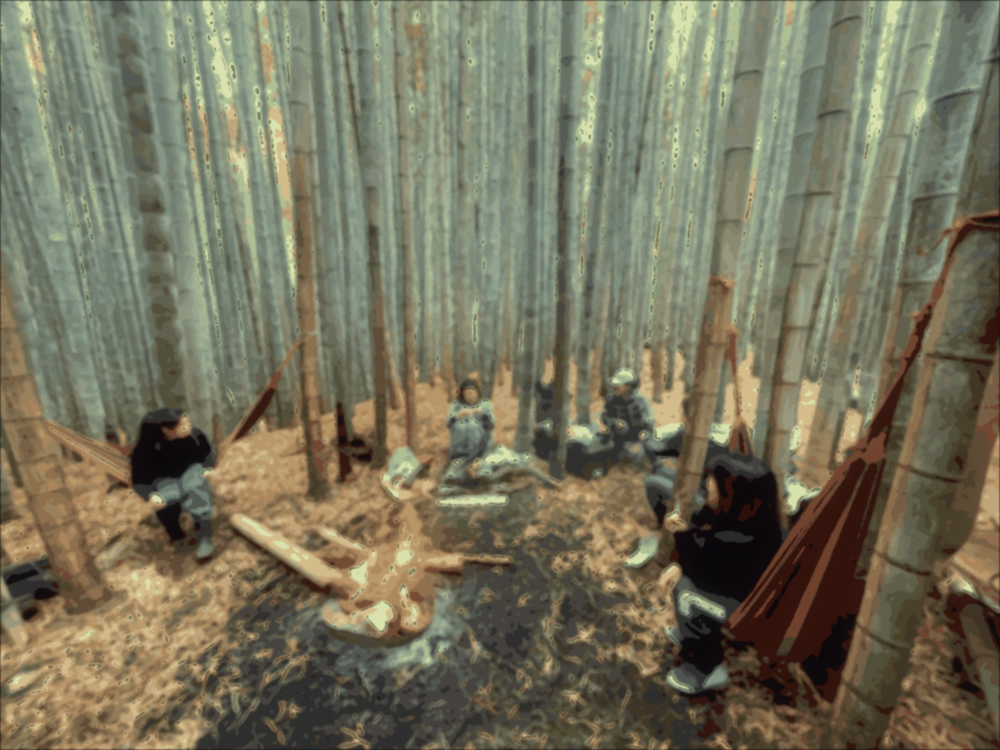
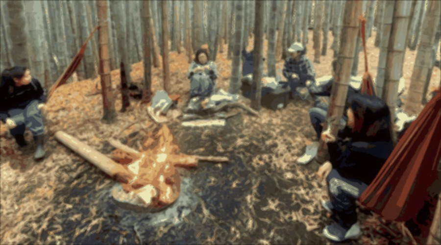
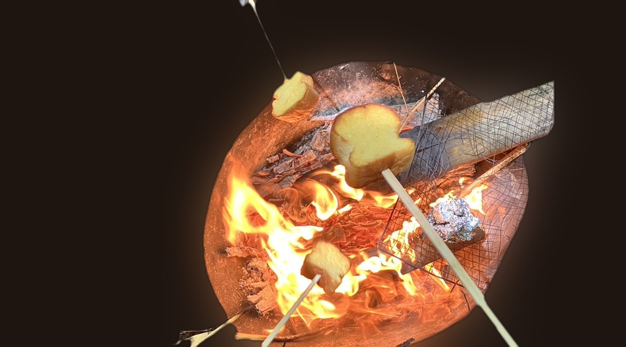
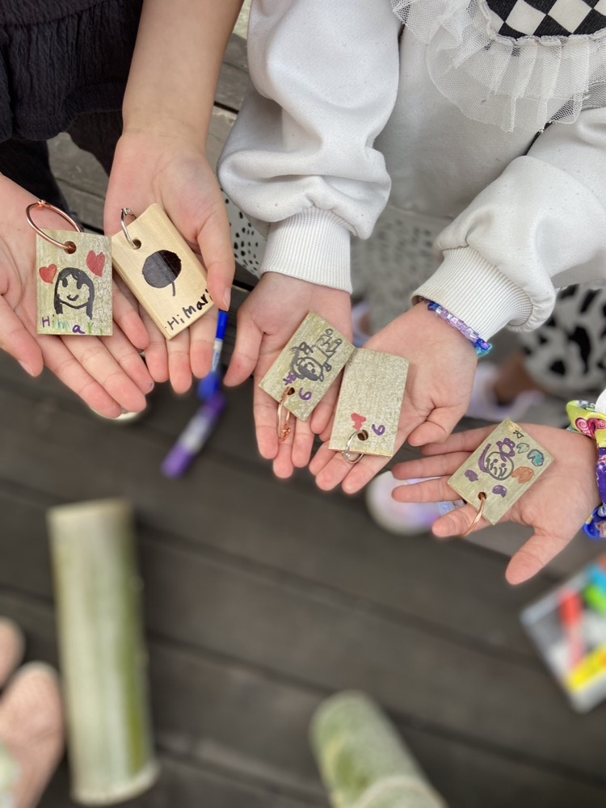

11月になると、山の木は葉を落として、林の中が明るくなっていきます。
竹は、この時期がいちばん葉が青いんです。春にたけのこを育てるために親竹が葉を手放すので、青くなるのは秋のほう。俳句でも、秋の季語を「竹の春」と呼ぶそうです。
竹を伐るのは、寒くなってから。水分が減って虫がつきにくくなるので、10月ではまだ早い。11月に入って、ようやく竹のシーズンが始まります。
それで、この2日間をひらくことにしました。
EVERY YEAR
この3つは、どの年も変わりません。

竹を燃やして、火を囲みます。竹の火はよく爆ぜて、よく暖まります。しゃべっても、黙っていても大丈夫です。

飲食の持ち込みは自由です。好きなものを持ってきて、火のそばでゆっくり食べてください。ゴミはお持ち帰りをお願いしています。

その年ごとにテーマを決めて、竹で何かひとつ作ります。道具はこちらで用意します。
2026年は、わりばしです。竹を割って、削って、自分の1膳を作ります。
作ったわりばしは、その場のお昼で使ってもよし、持ち帰ってもよし。作らずに、火のそばで見ているだけでも大丈夫です。
TIMETABLE
時間はめやすです。途中からの参加も、早帰りも大丈夫です。
10:00
現地で20分ほど、歩く範囲と気をつける所をお伝えします。長そで・長ズボン・運動靴でお越しください。
10:30
枯れ竹を集めて、火をつけます。竹は燃えるとよく爆ぜるので、最初は少し驚きます。
12:00
好きなものを持ってきてください。お弁当でも、鍋でも、お菓子でも。火のそばで温めてもかまいません。
13:00
竹を割るところから始めます。道具はこちらで用意します。作らずに見ているだけでも大丈夫です。
15:00
片づけは一緒にやりますが、先に帰っていただいても問題ありません。
同じ2日間で、竹林の区画をご案内します。自分の区画を持ってみたい方は、実際に歩いて、日の入り方や地面の様子を見てから決めていただけます。
その場で決める必要はありません。見るだけでも歓迎です。
CHECK
あとは、無くてもなんとかなります。
不便なところもありますが、それごと楽しんでいただけたらと思っています。
INFORMATION
| 日時 | 2026年11月28日（土）・29日（日） 10:00〜15:00（出入り自由） |
|---|---|
| 場所 | かすみがうら竹林ベース（茨城県かすみがうら市） くわしい場所は、お申し込みの方にお送りします |
| 内容 | 竹火を囲む、お昼、竹で何か作る（2026年はわりばし） 同日：フォレンタ区画の内覧会 |
| 参加費 | 無料です |
| 持ち込み | 飲食の持ち込みは自由です。ゴミはお持ち帰りください |
| 雨天 | 小雨決行です。タープの下で火を囲みます。大雨のときは前日までにご連絡します |
InstagramのDM、または公式LINEからご連絡ください。
「11月28日に行きたい」のひとことで大丈夫です。
なんか気になるな、という方は、スタンプだけでも嬉しいです。
かすみがうら竹林ベース ちくりんデイキャンプ
竹を伐るのは、寒くなってから。11月に入って、ようやく竹のシーズンが始まります。
竹を燃やして、火を囲みます。よく爆ぜて、よく暖まります。しゃべっても、黙っていても大丈夫です。
飲食の持ち込みは自由です。好きなものを持ってきて、火のそばでゆっくり食べてください。
その年ごとにテーマを決めて、竹で何かひとつ作ります。道具はこちらで用意します。
竹を割って、削って、自分の1膳を作ります。作らずに、火のそばで見ているだけでも大丈夫です。
10:00
歩く範囲と気をつける所を20分ほど
10:30
枯れ竹を集めて、火をつけます
12:00
持ち込み自由。火のそばで温めても
13:00
竹を割るところから。道具はこちらに
15:00
先に帰っていただいても大丈夫です
| 場所 | かすみがうら竹林ベース（茨城県かすみがうら市） くわしい場所はお申し込みの方へ |
|---|---|
| 参加費 | 無料です |
| 持ち込み | 飲食の持ち込みは自由です。ゴミはお持ち帰りください |
| 雨天 | 小雨決行。タープの下で火を囲みます。大雨のときは前日までにご連絡します |
| 同日開催 | フォレンタの区画、内覧会。見るだけでも歓迎です |
不便なところもありますが、それごと楽しんでいただけたら。